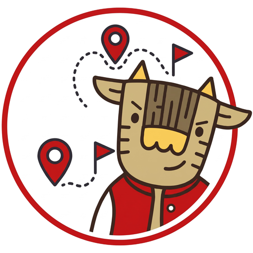

OnCampus
접속 기록 · 개인정보 안내
OnCampus(경북대 캠퍼스 퀘스트)는 아이디·비밀번호·이메일·전화번호 없이 쓰는 서비스예요. 닉네임과 소속만으로 시작하고, 어떤 정보가 어디에 저장되고 누구에게 전달되는지 아래에 모두 적어 두었어요.
실명·연락처 수집 안 함닉네임·소속만 받아요
광고·방문 통계 도구 없음Google Analytics 등 사용 안 함
위치는 기기에서만 판단서버에 위치를 저장하지 않아요
녹음은 업로드 안 함음성 미션 녹음은 기기에만
1. 이 브라우저에 저장하는 정보
- 항목
- 닉네임, 소속, XP·레벨 기록, 미션 진행 상태, 출석·퀴즈 기록, 구역 채팅 기록, 호반우 도감, 캠퍼스 투어 진행·뱃지, 음성 안내 설정, 알림 확인 시각, 사진 앨범(도감에 기록한 사진), 로그인 유지용 인증 토큰
- 목적
- 새로고침하거나 다시 접속해도 이어서 이용할 수 있게 하기 위해
- 보관
- 내 정보 탭의 ‘기록 초기화하고 처음부터 시작’을 누르거나, 브라우저의 사이트 데이터를 지울 때까지
- 제3자
- 없음 (이 기기의 브라우저 저장공간에만 있고, 다른 기기와 동기화하지 않아요)
브라우저 데이터를 지우거나 시크릿 모드를 닫으면 로그인 정보도 사라져, 같은 계정으로 다시 들어올 수 없어요. 아이폰 Safari는 홈 화면에 추가하지 않은 사이트를 7일 정도 쓰지 않으면 저장공간을 지울 수 있어요.
2. 익명 로그인과 프로필
- 항목
- 무작위로 만들어지는 사용자 ID, 닉네임, 소속(단과대학), 친구 코드, 총 XP
- 목적
- 사용자 구분, 랭킹 표시, ‘함께하기’ 미션의 친구 찾기
- 보관
- 자동 삭제 기간 없음. 삭제를 원하면 10번의 방법으로 요청
- 처리 위탁
- Supabase (데이터베이스·로그인·파일 저장)
- 공개 범위
- 닉네임·소속·XP는 랭킹에서 다른 이용자에게 보여요. 사용자 ID는 화면에 보이지 않아요.
3. 미션 진행과 랭킹
- 항목
- 완료한 미션 ID와 획득 점수, 총 XP
- 목적
- 랭킹 집계, 운영진의 구역·미션별 진행 현황 확인 (관리자 페이지)
- 보관
- 자동 삭제 기간 없음
- 처리 위탁
- Supabase
4. 커뮤니티 (글·사진·댓글·좋아요)
- 항목
-
- 게시글·질문: 닉네임, 내용, 선택한 장소, 올린 사진, 작성 시각
- 댓글·답변: 닉네임, 내용, 작성 시각
- 좋아요: 누른 사람의 사용자 ID와 시각 (게시글·댓글 모두)
- 목적
- 게시판 운영, 좋아요 수·베스트 답변 표시, 내 글에 반응이 달렸을 때 알림
- 공개 범위
- 글·사진·댓글은 앱을 쓰는 모든 사람이 볼 수 있어요. 사진은 링크를 아는 누구나 열 수 있는 공개 저장소에 올라가요.
- 보관
- 자동 삭제 기간 없음. 댓글은 직접 삭제, 좋아요는 직접 취소할 수 있어요. 게시글은 아직 직접 삭제 기능이 없어, 운영진에게 삭제를 요청해 주세요. 게시글이 삭제되면 그 글의 댓글·좋아요도 함께 삭제돼요.
- 처리 위탁
- Supabase (게시글·댓글 저장, 사진 저장소)
사진을 올리기 전에 얼굴·학번·연락처처럼 다른 사람이나 나를 알아볼 수 있는 정보가 찍혀 있지 않은지 확인해 주세요. 사진의 위치 정보(EXIF)는 앱에서 따로 지우지 않아요.
5. 신고
- 항목
- 신고한 게시글, 신고한 사람의 사용자 ID, 신고 시각
- 목적
- 부적절한 글 관리. 신고 내용은 관리자만 확인해요.
- 보관
- 자동 삭제 기간 없음
6. 알림과 함께하기 미션
- 항목
-
- 알림: 받는 사람, 알림 종류와 문구(예: ‘OO님이 내 게시글에 좋아요를 눌렀어요’), 읽음 여부, 시각
- 함께하기: 미션 ID, 요청한 사람·받은 사람의 사용자 ID, 수락 여부와 시각
- 목적
- 친구 요청·수락, 내 글 반응, 공지를 알려 드리기 위해
- 보관
- 자동 삭제 기간 없음
- 처리 위탁
- Supabase
랜덤 매칭에서 고르는 성별·원하는 상대 조건은 이 기기 안에서만 쓰이고 서버에 보내지 않아요.
7. 위치·카메라·마이크 권한
| 권한 | 쓰는 곳 | 어디로 가나요 |
|---|---|---|
| 위치 | 구역 도착 확인, 지도에 내 위치 표시, 도보 길찾기, 앨범 사진의 촬영 장소 분류 | 거리 계산은 기기 안에서만 해요. 서버에 위치를 저장하지 않아요. 단, 길찾기를 할 때는 출발지(현재 위치)와 도착지 좌표가 경로 계산 서비스(OSRM)로 전송돼요. |
| 카메라 | AR 호반우, 사진 미션, 사진 꾸미기 | 화면은 기기에서만 처리해요. 사진 미션의 사진은 8번처럼 확인을 위해 전송되고, 커뮤니티에 올린 사진만 서버에 저장돼요. |
| 마이크 | 음성 미션 녹음 | 녹음은 기기에서 재생해 보는 용도로만 쓰고, 어디에도 업로드하지 않아요. |
권한은 해당 기능을 처음 쓸 때 브라우저가 물어보며, 거부해도 다른 기능은 쓸 수 있어요. 브라우저 설정에서 언제든 바꿀 수 있어요.
8. 미션 사진 확인 (Google Cloud Vision)
- 항목
- 사진 미션에서 찍은 사진 (긴 변 800px로 줄인 사본)
- 목적
- 사진이 미션 내용과 맞는지 자동으로 확인 (사진 속 물체·장면, 필요한 미션에서만 글자 인식)
- 보관
- OnCampus는 확인 결과만 쓰고 사진을 따로 저장하지 않아요. Google의 처리·보관은 Cloud Vision 데이터 사용 안내를 따라요.
- 제3자
- Google LLC (Google Cloud Vision API)
9. 접속 기록과 외부 서비스
OnCampus는 방문 통계·광고 도구를 쓰지 않고, 접속 기록을 따로 모으지 않아요. 다만 앱 화면을 보여 주기 위해 아래 서비스에 접속하며, 이때 각 서비스가 일반적인 접속 기록(IP 주소, 접속 시각, 브라우저 정보)을 남길 수 있어요.
| 서비스 | 용도 | 전달되는 정보 |
|---|---|---|
| GitHub Pages | 앱 페이지 제공 (호스팅) | 접속 기록 |
| Supabase | 로그인, 데이터·사진 저장 | 접속 기록, 위 2~6번의 정보 |
| Google Cloud Vision | 미션 사진 확인 | 접속 기록, 미션 사진 |
| OSRM | 도보 경로 계산 | 접속 기록, 출발·도착 좌표 |
| OpenStreetMap | 투어 지도 이미지 | 접속 기록, 보고 있는 지도 범위 |
| Google Fonts, jsDelivr, unpkg | 글꼴·프로그램 파일 제공 | 접속 기록 |
10. 삭제 요청과 문의
- 직접 할 수 있는 것
-
- 내 댓글 삭제, 좋아요 취소
- ‘기록 초기화하고 처음부터 시작’으로 이 기기의 기록 삭제 (서버의 프로필·게시글은 남아요)
- 위치·카메라·마이크 권한 끄기 (브라우저 설정)
- 요청해야 하는 것
- 게시글 삭제, 서버의 프로필·미션 기록·알림 삭제. 익명 계정이라 본인 확인을 위해 내 정보 탭의 친구 코드를 함께 알려 주세요.
- 문의처
- OnCampus 운영팀 · [문의 이메일 또는 문의 폼 링크를 여기에 적어 주세요]